이 전략의 진입 조건
- 30주선 크로스오버 — 주봉 종가가 30주 이동평균을 그 주에 처음 넘을 것(직전 주까지는 아래에 있어야 하며, 이미 위에 있던 종목은 신호가 아닙니다)
- 거래량 급증 — 그 주의 최고 일별 거래량이 직전 20거래일 평균의 2배 이상일 것 (원서 조건 그대로: "일주일 동안의 최고 거래량이 지난달 평균 거래량보다 최소 2배")
- 맨스필드 RS ≥ 0 — 지수 대비 상대강도가 자기 52주 이동평균 위에 있을 것 (코스피 종목은 코스피, 코스닥은 코스닥, 미국은 S&P500 기준)
자세히 — 한계와 주의사항
세 조건을 모두 만족해야 신호가 납니다. 순위는 거래량 배수 내림차순이고 상위 30종목만 표시합니다.
RS 게이트에는 예외가 있습니다. RS를 계산할 수 없으면(상장 후 52주 미만 등) 게이트를 걸지 않고 통과시킵니다 — 현재 신호의 약 6%입니다. 2026-09-06 이전에는 이 값이 35%였습니다(백테스트용 지수를 8년치만 받아와 앞 3~4년의 RS가 통째로 비어 있었습니다).
성과 수치를 근거로 삼지 마세요. 진입 조건을 전혀 바꾸지 않고 백테스트 기간만 ±7% 흔들어도 10년 CAGR이 7.75%~21.88%로 움직입니다(폭 14.1%p). 조건을 바꿔서 얻는 차이(11.4%p)보다 큽니다. 지금 조합은 '최선이라서'가 아니라 '바꿀 근거가 없어서' 유지하는 것입니다 — reports/weinstein_entry_rules_decision_log.md §5⑫.
이미 기각된 방향: 베이스 저항선 돌파, 원서②(3~4주 누적 거래량), 30주선 비하락, 주간 총거래량 기준. 근거는 같은 문서 §4에 있습니다.
기타 금융업
업종 참고: RS 평균 56/99(업종 중 상위 53%) · 오늘 신호 2건 · 업종 평균이 코스피 대비 +20.5%p(126일), 종목별 편차 ±30%p
🧪 자체 섹터 분류(실험적, 참고용): 에스텍·사람인 등 14종목 (업종 혼재)
섹터 내 RS 순위: 4/14위 (RS 86/99)
섹터 1~3위: 에스텍(98), 사람인(91), 금화피에스시(87)
※ 자체 상관관계 계산(최근 1년) — 검증 시 기준업종 11개 중 8개 정확. 주 단위로 구성종목이 일부 바뀔 수 있음(주간 일치도 실측 0.53)
종가 92,400 · 거래대금 34억
거래량비 3.6x맨스필드RS +15.1
손절 85,932 | 목표 111,804 | 수량 108주
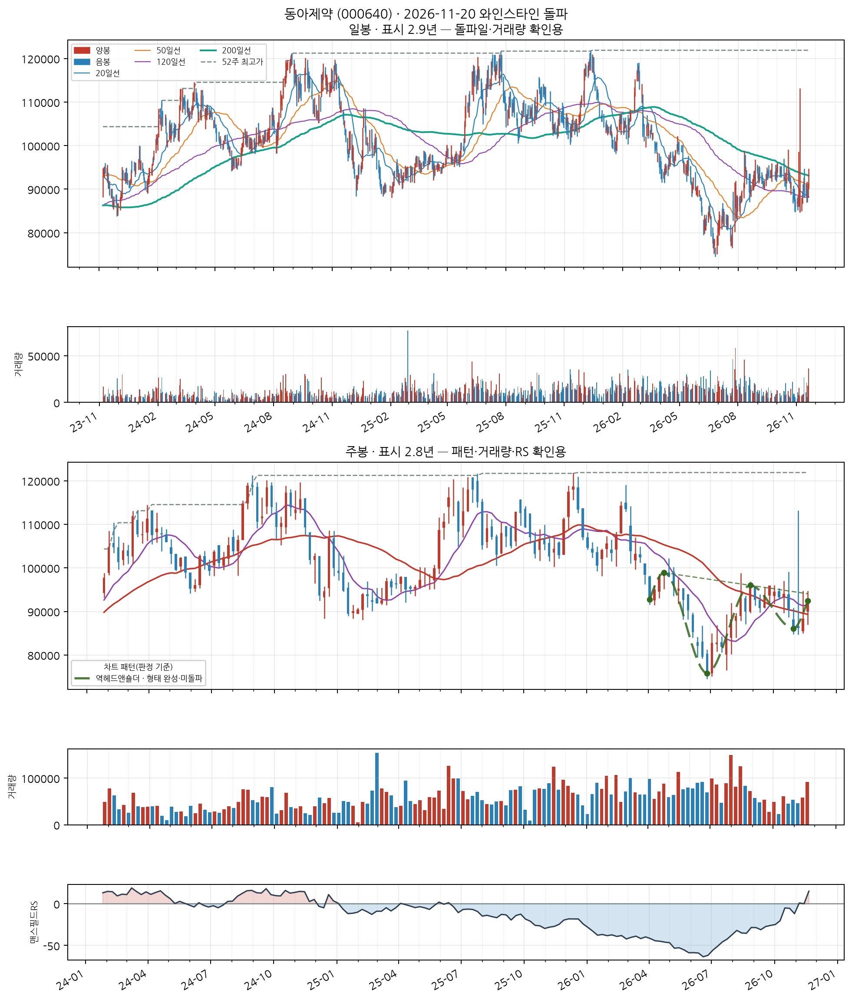
📐 역헤드앤숄더 · 형태 완성·미돌파
📐 차트 패턴 판정: 역헤드앤숄더 형태 완성·미돌파 확신 높음 판정 기준(PDF)
세 저점 구조는 있으나 넥라인(94,067)을 아직 넘지 못했다.
가장 강한 반증 뚜렷한 반증 없음 — 단, 패턴 판정이 이후 수익을 보장하지는 않는다
경쟁 후보·더 단순한 설명 컵위드핸들(형태 완성·미돌파·확신 낮음)
측정표 (주봉 종가 기준, 판정일 2026-11-20 이후 데이터 미사용)
조건별 판정
- 충족 선행 추세 — 선행 하락 -15.2% ≤ -15%
- 충족 머리 깊이 — 양 어깨 대비 최소 12.0% ≥ 3.5%
- 충족 어깨 대칭 — 어깨 높이차 7.1% ≤ 15%
- 충족 기간 — 어깨 간 30주 ≥ 6주
- 충족 시간 대칭 — 머리 좌우 기간 비 1.50
- 충족 넥라인 기울기 — 주당 -0.2%
- 충족 오른쪽 어깨 매도 약화 — 오른쪽 어깨 부근 거래량 = 머리 부근의 0.56배
- 충족 최근성 — 마지막 구조 피벗(2026-10-30)이 3주 전
- 미충족 넥라인 돌파 — 종가가 아직 확인선 위로 안 올라옴(-1.8%)
- 판정불가 돌파 거래량 — 돌파 전
추가로 필요한 데이터 장중 고저 기준 깊이(여기 수치는 주봉 종가 기준)
패턴만으로 매수 추천이나 목표 달성 확률을 만들지 않습니다. 수치 기준은 잠정치이며 라벨 데이터로 검증되지 않았습니다.
아모레퍼시픽홀딩스3우C (00279K)
신규
KOSPI
정보없음
🧪 자체 섹터 분류(실험적, 참고용): 기타 화학제품 제조업 (아모레퍼시픽홀딩스·아모레퍼시픽 등 4종목)
섹터 내 RS 순위: 3/4위 (RS 88/99)
섹터 1~3위: 아모레퍼시픽홀딩스(94), 아모레퍼시픽(94), 아모레퍼시픽홀딩스3우C(88)
※ 자체 상관관계 계산(최근 1년) — 검증 시 기준업종 11개 중 8개 정확. 주 단위로 구성종목이 일부 바뀔 수 있음(주간 일치도 실측 0.53)
종가 21,300 · 거래대금 2.8억
거래량비 29.8x맨스필드RS +17.2
손절 19,809 | 목표 25,773 | 수량 469주
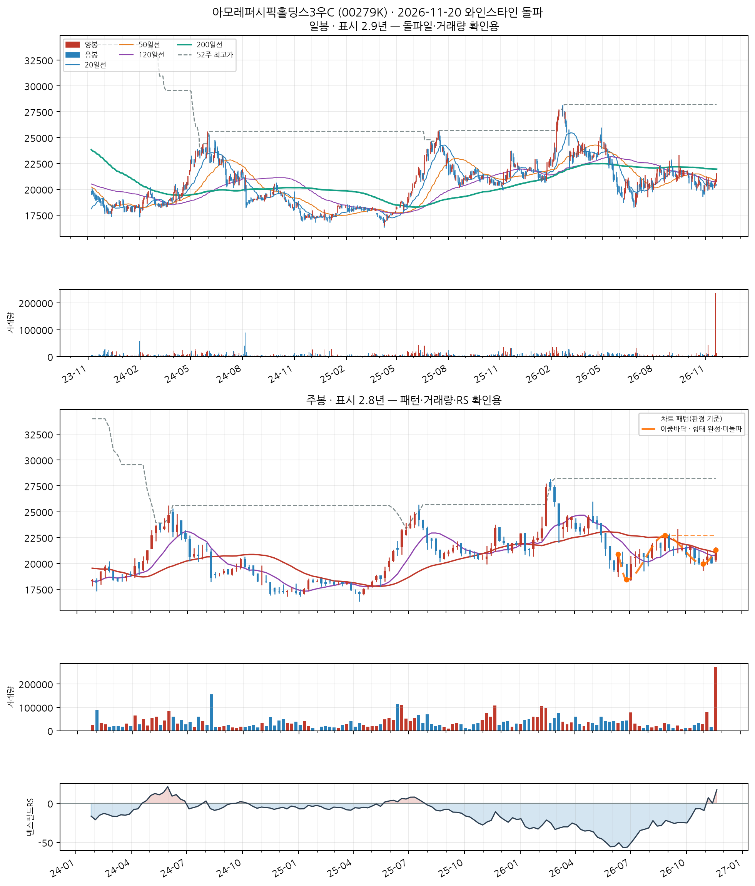
📐 이중바닥 · 형태 완성·미돌파
📐 차트 패턴 판정: 이중바닥 형태 완성·미돌파 확신 중간 판정 기준(PDF)
W 형태는 있으나 중간 고점 22,700를 아직 넘지 못했다.
가장 강한 반증 선행 추세: 선행 하락 -1.6% — -15%까지 안 내려옴
경쟁 후보·더 단순한 설명 역헤드앤숄더(형태 완성·미돌파·확신 낮음)
측정표 (주봉 종가 기준, 판정일 2026-11-20 이후 데이터 미사용)
조건별 판정
- 부분충족 선행 추세 — 선행 하락 -1.6% — -15%까지 안 내려옴
- 부분충족 두 저점 일치 — 저점 차이 7.6% — 6% 초과
- 충족 중간 반등 — 중간 반등 23.2% ≥ 8%
- 충족 기간 — 베이스 23주 ≥ 7주
- 충족 깊이 — 베이스 깊이 11.8% ≤ 40%
- 충족 저점2 매도 약화 — 저점2 부근 거래량 = 저점1 부근의 0.88배
- 충족 최근성 — 마지막 구조 피벗(2026-10-30)이 3주 전
- 미충족 넥라인 돌파 — 종가가 아직 확인선 위로 안 올라옴(-6.2%)
- 판정불가 돌파 거래량 — 돌파 전
추가로 필요한 데이터 장중 고저 기준 깊이(여기 수치는 주봉 종가 기준)
패턴만으로 매수 추천이나 목표 달성 확률을 만들지 않습니다. 수치 기준은 잠정치이며 라벨 데이터로 검증되지 않았습니다.
텔레비전 방송업
업종 참고: RS 평균 80/99(업종 중 상위 1%) · 오늘 신호 1건 · 업종 평균이 코스피 대비 +43.5%p(126일), 종목별 편차 ±18%p
🧪 자체 섹터 분류(실험적, 참고용): 리파인·제이브이엠 등 8종목 (업종 혼재)
섹터 내 RS 순위: 3/8위 (RS 82/99)
섹터 1~3위: 리파인(97), 제이브이엠(92), SBS(82)
※ 자체 상관관계 계산(최근 1년) — 검증 시 기준업종 11개 중 8개 정확. 주 단위로 구성종목이 일부 바뀔 수 있음(주간 일치도 실측 0.53)
종가 13,270 · 거래대금 9.5억
거래량비 21.6x맨스필드RS +6.7
손절 12,341 | 목표 16,057 | 수량 753주
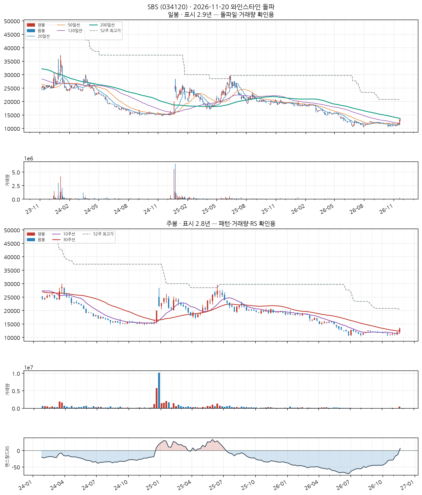
📐 차트 패턴 판정: 후보 없음 후보 없음 판정 기준(PDF)
세 패턴 모두 필수 조건을 채운 후보가 없다(가장 가까운 컵위드핸들 후보: 깊이: 컵 깊이 51.8% — 기준 12%~33%(고변동 최대 50%)를 벗어남).
가장 강한 반증 컵위드핸들: 깊이: 컵 깊이 51.8% — 기준 12%~33%(고변동 최대 50%)를 벗어남; 이중바닥: 두 저점 일치: 저점 차이 45.2% — 같은 지지대로 보기 어려움(10% 초과)
경쟁 후보·더 단순한 설명 더 단순한 설명: 최근 26주 박스권 횡보(등락폭 24.4%)
추가로 필요한 데이터 장중 고저 기준 깊이(여기 수치는 주봉 종가 기준)
패턴만으로 매수 추천이나 목표 달성 확률을 만들지 않습니다. 수치 기준은 잠정치이며 라벨 데이터로 검증되지 않았습니다.
여행사 및 기타 여행보조 서비스업
업종 참고: RS 평균 68/99(업종 중 상위 24%) · 오늘 신호 2건 · 업종 평균이 코스피 대비 +28.3%p(126일), 종목별 편차 ±20%p
🧪 자체 섹터 분류(실험적, 참고용): 항공 여객 운송업 (한진칼·제주항공 등 12종목)
섹터 내 RS 순위: 10/12위 (RS 76/99)
섹터 1~3위: 한진칼(99), 제주항공(98), 진에어(96)
※ 자체 상관관계 계산(최근 1년) — 검증 시 기준업종 11개 중 8개 정확. 주 단위로 구성종목이 일부 바뀔 수 있음(주간 일치도 실측 0.53)
종가 34,250 · 거래대금 94억
거래량비 25.6x맨스필드RS +6.1
손절 31,852 | 목표 41,442 | 수량 291주
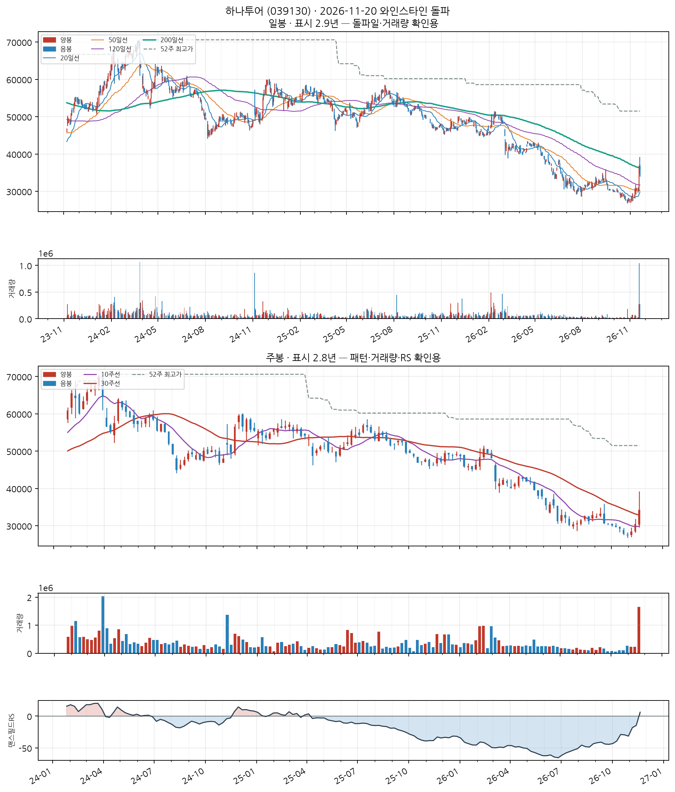
📐 차트 패턴 판정: 후보 없음 후보 없음 판정 기준(PDF)
세 패턴 모두 필수 조건을 채운 후보가 없다(가장 가까운 컵위드핸들 후보: 림 대칭: 좌우 림 차이 32.4% — 오른쪽 림이 낮음, 20% 초과).
가장 강한 반증 컵위드핸들: 림 대칭: 좌우 림 차이 32.4% — 오른쪽 림이 낮음, 20% 초과; 이중바닥: 두 저점 일치: 저점 차이 39.1% — 같은 지지대로 보기 어려움(10% 초과)
경쟁 후보·더 단순한 설명 더 단순한 설명: 최근 26주 하락 추세 지속(-10.0%) — 베이스 없음
추가로 필요한 데이터 장중 고저 기준 깊이(여기 수치는 주봉 종가 기준)
패턴만으로 매수 추천이나 목표 달성 확률을 만들지 않습니다. 수치 기준은 잠정치이며 라벨 데이터로 검증되지 않았습니다.
오디오물 출판 및 원판 녹음업
업종 참고: RS 평균 76/99(업종 중 상위 10%) · 오늘 신호 1건 · 업종 평균이 코스닥 대비 +38.1%p(126일), 종목별 편차 ±16%p
🧪 자체 섹터 분류(실험적, 참고용): 오디오물 출판 및 원판 녹음업 (CJ ENM·에스엠 등 8종목)
섹터 내 RS 순위: 2/8위 (RS 94/99)
섹터 1~3위: CJ ENM(95), 에스엠(94), 스튜디오드래곤(93)
※ 자체 상관관계 계산(최근 1년) — 검증 시 기준업종 11개 중 8개 정확. 주 단위로 구성종목이 일부 바뀔 수 있음(주간 일치도 실측 0.53)
종가 97,400 · 거래대금 583억
거래량비 12.7x맨스필드RS +55.1
손절 90,582 | 목표 117,854 | 수량 102주
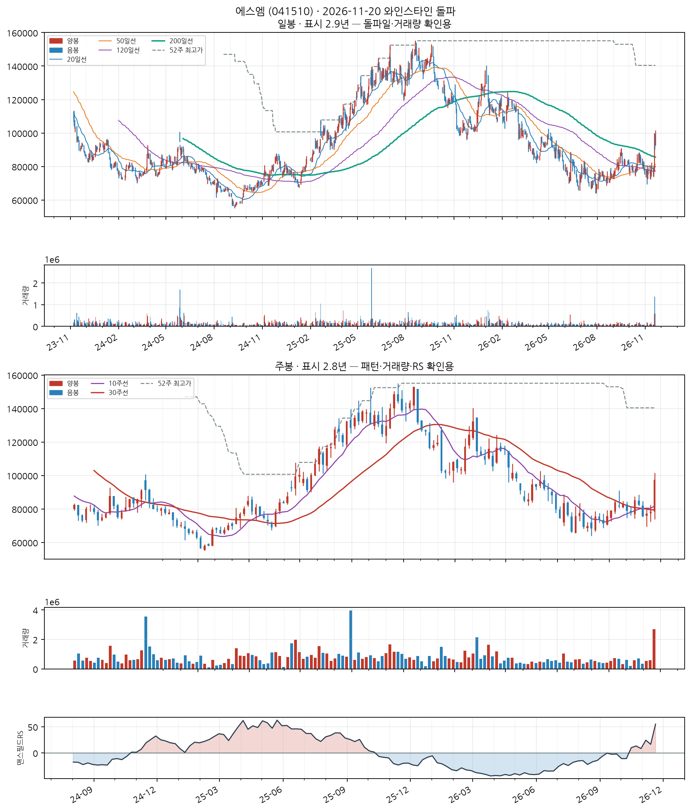
📐 차트 패턴 판정: 후보 없음 후보 없음 판정 기준(PDF)
세 패턴 모두 필수 조건을 채운 후보가 없다(가장 가까운 컵위드핸들 후보: 림 대칭: 좌우 림 차이 26.4% — 오른쪽 림이 낮음, 20% 초과).
가장 강한 반증 컵위드핸들: 림 대칭: 좌우 림 차이 26.4% — 오른쪽 림이 낮음, 20% 초과; 이중바닥: 두 저점 일치: 저점 차이 34.5% — 같은 지지대로 보기 어려움(10% 초과)
경쟁 후보·더 단순한 설명 더 단순한 설명: 최근 26주 상승 추세 지속(+10.4%) — 베이스 없음
추가로 필요한 데이터 장중 고저 기준 깊이(여기 수치는 주봉 종가 기준)
패턴만으로 매수 추천이나 목표 달성 확률을 만들지 않습니다. 수치 기준은 잠정치이며 라벨 데이터로 검증되지 않았습니다.
기타 화학제품 제조업
업종 참고: RS 평균 57/99(업종 중 상위 51%) · 오늘 신호 4건 · 업종 평균이 코스피 대비 +27.2%p(126일), 종목별 편차 ±40%p
🧪 자체 섹터 분류(실험적, 참고용): 기타 화학제품 제조업 (아모레퍼시픽홀딩스·아모레퍼시픽 등 4종목)
섹터 내 RS 순위: 2/4위 (RS 94/99)
섹터 1~3위: 아모레퍼시픽홀딩스(94), 아모레퍼시픽(94), 아모레퍼시픽홀딩스3우C(88)
※ 자체 상관관계 계산(최근 1년) — 검증 시 기준업종 11개 중 8개 정확. 주 단위로 구성종목이 일부 바뀔 수 있음(주간 일치도 실측 0.53)
종가 139,100 · 거래대금 303억
거래량비 3.2x맨스필드RS +29.2
손절 129,363 | 목표 168,311 | 수량 71주
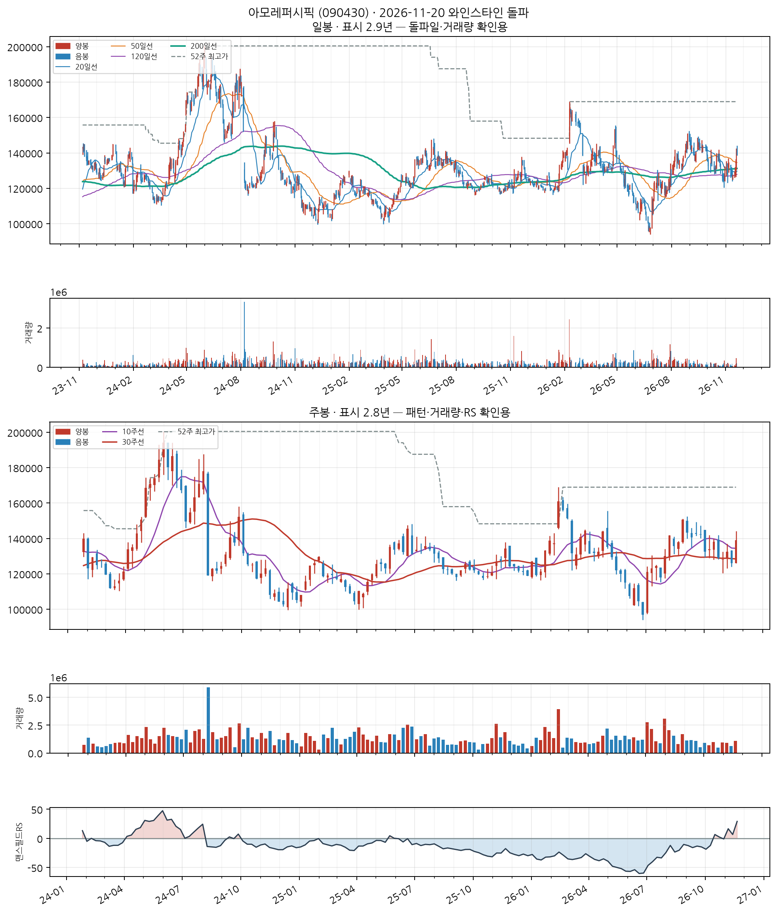
📐 차트 패턴: 약한 유사 — 역헤드앤숄더 형태 완성·미돌파 확신 낮음 판정 기준(PDF)
세 저점 구조는 있으나 넥라인(153,982)을 아직 넘지 못했다.
가장 강한 반증 선행 추세: 선행 추세가 상승(+7.3%) — 상승 중 눌림일 수 있어 반전형 전제가 없다
경쟁 후보·더 단순한 설명 더 단순한 설명: 선행 하락이 없어 반전형이 아니라 상승 추세 중 눌림(조정)일 수 있다
측정표 (주봉 종가 기준, 판정일 2026-11-20 이후 데이터 미사용)
조건별 판정
- 미충족 선행 추세 — 선행 추세가 상승(+7.3%) — 상승 중 눌림일 수 있어 반전형 전제가 없다
- 충족 머리 깊이 — 양 어깨 대비 최소 23.0% ≥ 3.5%
- 충족 어깨 대칭 — 어깨 높이차 3.8% ≤ 15%
- 충족 기간 — 어깨 간 35주 ≥ 6주
- 충족 시간 대칭 — 머리 좌우 기간 비 1.33
- 충족 넥라인 기울기 — 주당 +0.2%
- 충족 오른쪽 어깨 매도 약화 — 오른쪽 어깨 부근 거래량 = 머리 부근의 0.51배
- 충족 최근성 — 마지막 구조 피벗(2026-11-13)이 1주 전
- 미충족 넥라인 돌파 — 종가가 아직 확인선 위로 안 올라옴(-9.7%)
- 판정불가 돌파 거래량 — 돌파 전
추가로 필요한 데이터 장중 고저 기준 깊이(여기 수치는 주봉 종가 기준)
패턴만으로 매수 추천이나 목표 달성 확률을 만들지 않습니다. 수치 기준은 잠정치이며 라벨 데이터로 검증되지 않았습니다.
신탁업 및 집합투자업
업종 참고: RS 평균 66/99(업종 중 상위 31%) · 오늘 신호 1건 · 업종 평균이 코스피 대비 +27.4%p(126일), 종목별 편차 ±20%p
🧪 자체 섹터 분류(실험적, 참고용): 부동산 임대 및 공급업 (맵스리얼티·한화리츠 등 4종목)
섹터 내 RS 순위: 1/4위 (RS 94/99)
섹터 1~3위: 맵스리얼티(94), 한화리츠(72), SK리츠(71)
※ 자체 상관관계 계산(최근 1년) — 검증 시 기준업종 11개 중 8개 정확. 주 단위로 구성종목이 일부 바뀔 수 있음(주간 일치도 실측 0.53)
종가 6,880 · 거래대금 1.6억
거래량비 2.1x맨스필드RS +32.9
손절 6,398 | 목표 8,325 | 수량 1,453주
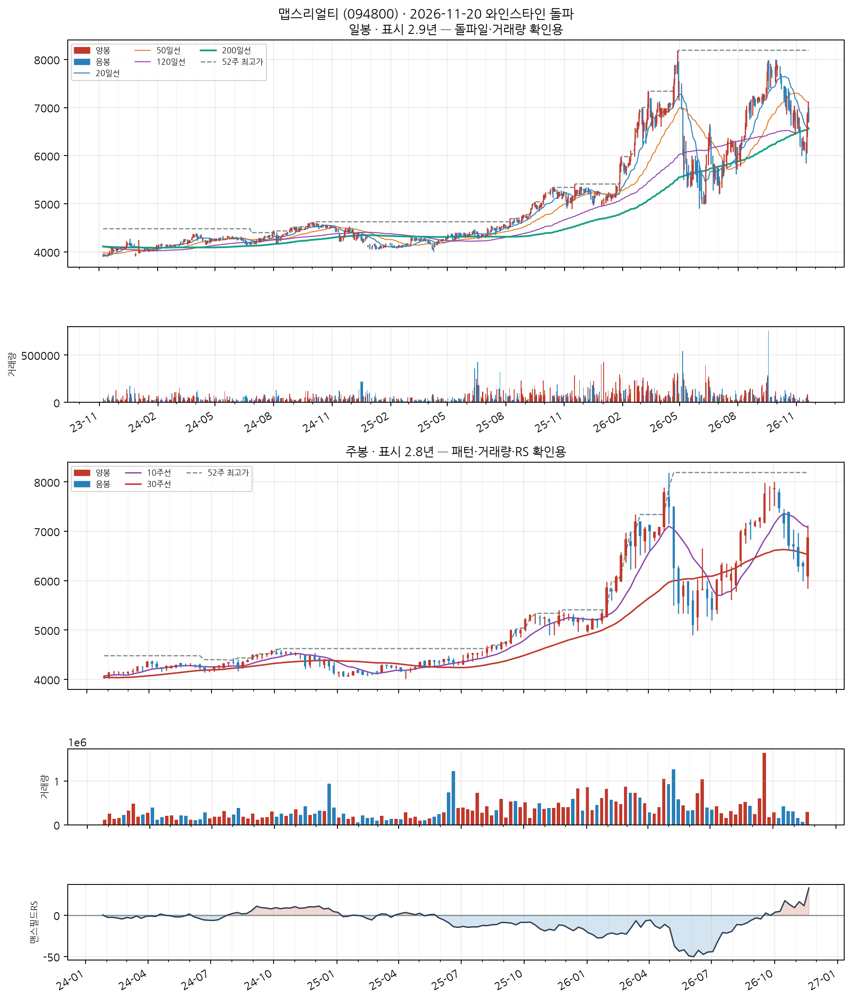
📐 차트 패턴 판정: 후보 없음 후보 없음 판정 기준(PDF)
세 패턴 모두 필수 조건을 채운 후보가 없다(가장 가까운 컵위드핸들 후보: 구조 독립성: 부모 컵(오른쪽 림 2026-10-02)의 핸들 하락(저점 2026-11-06)을 새 컵의 왼쪽 절반으로 재분할한 후보 — 자체 핸들이 아직 없다, 독립된 새 구조의 증거가 없다).
가장 강한 반증 컵위드핸들: 구조 독립성: 부모 컵(오른쪽 림 2026-10-02)의 핸들 하락(저점 2026-11-06)을 새 컵의 왼쪽 절반으로 재분할한 후보 — 자체 핸들이 아직 없다, 독립된 새 구조의 증거가 없다; 이중바닥: 두 저점 일치: 저점 차이 18.9% — 같은 지지대로 보기 어려움(10% 초과)
경쟁 후보·더 단순한 설명 더 단순한 설명: 최근 26주 상승 추세 지속(+16.6%) — 베이스 없음
추가로 필요한 데이터 장중 고저 기준 깊이(여기 수치는 주봉 종가 기준)
패턴만으로 매수 추천이나 목표 달성 확률을 만들지 않습니다. 수치 기준은 잠정치이며 라벨 데이터로 검증되지 않았습니다.
자료처리, 호스팅, 포털 및 기타 인터넷 정보매개 서비스업
업종 참고: RS 평균 65/99(업종 중 상위 32%) · 오늘 신호 1건 · 업종 평균이 코스피 대비 +32.3%p(126일), 종목별 편차 ±29%p
🧪 자체 섹터 분류(실험적, 참고용): 에스텍·사람인 등 14종목 (업종 혼재)
섹터 내 RS 순위: 2/14위 (RS 91/99)
섹터 1~3위: 에스텍(98), 사람인(91), 금화피에스시(87)
※ 자체 상관관계 계산(최근 1년) — 검증 시 기준업종 11개 중 8개 정확. 주 단위로 구성종목이 일부 바뀔 수 있음(주간 일치도 실측 0.53)
종가 17,050 · 거래대금 5.7억
거래량비 2.9x맨스필드RS +55.2
손절 15,856 | 목표 20,630 | 수량 586주
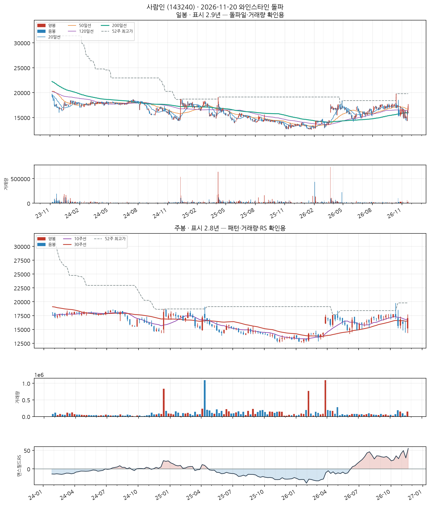
📐 차트 패턴: 약한 유사 — 이중바닥 형태 완성·미돌파 확신 낮음 판정 기준(PDF)
W 형태는 있으나 중간 고점 17,760를 아직 넘지 못했다.
가장 강한 반증 선행 추세: 선행 추세가 상승(+26.8%) — 상승 중 눌림일 수 있어 반전형 전제가 없다
경쟁 후보·더 단순한 설명 컵위드핸들(형성 중·확신 낮음) / 역헤드앤숄더(형태 완성·미돌파·확신 낮음) / 더 단순한 설명: 선행 하락이 없어 반전형이 아니라 상승 추세 중 눌림(조정)일 수 있다
측정표 (주봉 종가 기준, 판정일 2026-11-20 이후 데이터 미사용)
조건별 판정
- 미충족 선행 추세 — 선행 추세가 상승(+26.8%) — 상승 중 눌림일 수 있어 반전형 전제가 없다
- 충족 두 저점 일치 — 저점 차이 2.1% ≤ 6%
- 충족 중간 반등 — 중간 반등 19.4% ≥ 8%
- 충족 기간 — 베이스 31주 ≥ 7주
- 충족 깊이 — 베이스 깊이 15.5% ≤ 40%
- 부분충족 저점2 매도 약화 — 저점2 부근 거래량 = 저점1 부근의 1.89배
- 충족 최근성 — 마지막 구조 피벗(2026-11-13)이 1주 전
- 미충족 넥라인 돌파 — 종가가 아직 확인선 위로 안 올라옴(-4.0%)
- 판정불가 돌파 거래량 — 돌파 전
추가로 필요한 데이터 장중 고저 기준 깊이(여기 수치는 주봉 종가 기준)
패턴만으로 매수 추천이나 목표 달성 확률을 만들지 않습니다. 수치 기준은 잠정치이며 라벨 데이터로 검증되지 않았습니다.
전자부품 제조업
업종 참고: RS 평균 37/99(업종 중 상위 79%) · 오늘 신호 3건 · 업종 평균이 코스닥 대비 +4.7%p(126일), 종목별 편차 ±26%p
🧪 자체 섹터 분류(실험적, 참고용): SK디스커버리·미래에셋생명 등 23종목 (업종 혼재)
섹터 내 RS 순위: 8/23위 (RS 69/99)
섹터 1~3위: SK디스커버리(95), 미래에셋생명(90), DB(89)
※ 자체 상관관계 계산(최근 1년) — 검증 시 기준업종 11개 중 8개 정확. 주 단위로 구성종목이 일부 바뀔 수 있음(주간 일치도 실측 0.53)
종가 15,300 · 거래대금 96억
거래량비 8.1x맨스필드RS +29.8
손절 14,229 | 목표 18,513 | 수량 653주
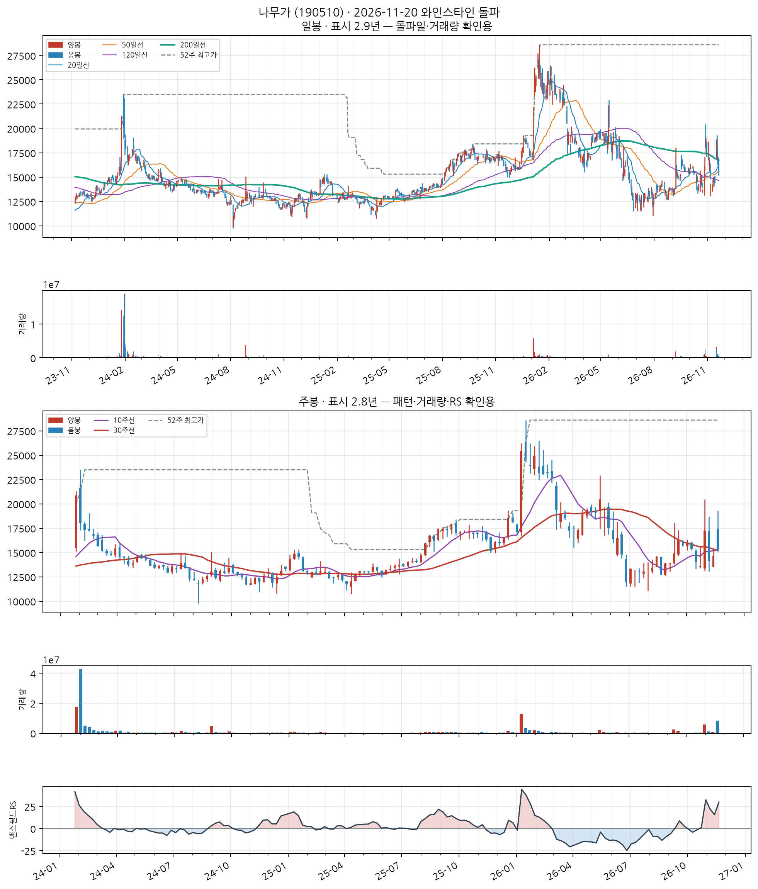
📐 차트 패턴: 약한 유사 — 이중바닥 실패 확신 낮음 판정 기준(PDF)
중간 고점 16,240를 넘었다가 종가가 다시 그 아래로 내려왔다(돌파 실패).
가장 강한 반증 돌파 유지: 돌파 뒤 종가가 확인선 아래로 되돌아옴(현재 -5.8%)
경쟁 후보·더 단순한 설명 없음
측정표 (주봉 종가 기준, 판정일 2026-11-20 이후 데이터 미사용)
조건별 판정
- 충족 선행 추세 — 선행 하락 -37.0% ≤ -15%
- 부분충족 두 저점 일치 — 저점 차이 6.3% — 6% 초과
- 충족 중간 반등 — 중간 반등 27.7% ≥ 8%
- 충족 기간 — 베이스 14주 ≥ 7주
- 충족 깊이 — 베이스 깊이 12.5% ≤ 40%
- 부분충족 저점2 매도 약화 — 저점2 부근 거래량 = 저점1 부근의 12.62배
- 충족 최근성 — 돌파 주(2026-10-30)가 3주 전
- 충족 넥라인 돌파 — 2026-10-30 주 종가 17,250 > 확인선 — 돌파 후 3주 경과
- 미충족 돌파 유지 — 돌파 뒤 종가가 확인선 아래로 되돌아옴(현재 -5.8%)
- 충족 돌파 거래량 — 돌파 주 거래량 = 직전 10주 평균의 10.53배
추가로 필요한 데이터 장중 고저 기준 깊이(여기 수치는 주봉 종가 기준)
패턴만으로 매수 추천이나 목표 달성 확률을 만들지 않습니다. 수치 기준은 잠정치이며 라벨 데이터로 검증되지 않았습니다.
슈피겐코리아 (192440)
신규
KOSDAQ
그외 기타 제품 제조업
업종 참고: RS 평균 데이터 부족 · 오늘 신호 1건
🧪 자체 섹터 분류(실험적, 참고용): 지어소프트·골프존홀딩스 등 20종목 (업종 혼재)
섹터 내 RS 순위: 9/20위 (RS 77/99)
섹터 1~3위: 지어소프트(98), 골프존홀딩스(98), 인피니트헬스케어(97)
※ 자체 상관관계 계산(최근 1년) — 검증 시 기준업종 11개 중 8개 정확. 주 단위로 구성종목이 일부 바뀔 수 있음(주간 일치도 실측 0.53)
종가 29,850 · 거래대금 1.0억
거래량비 13.7x맨스필드RS +57.2
손절 27,760 | 목표 36,118 | 수량 335주
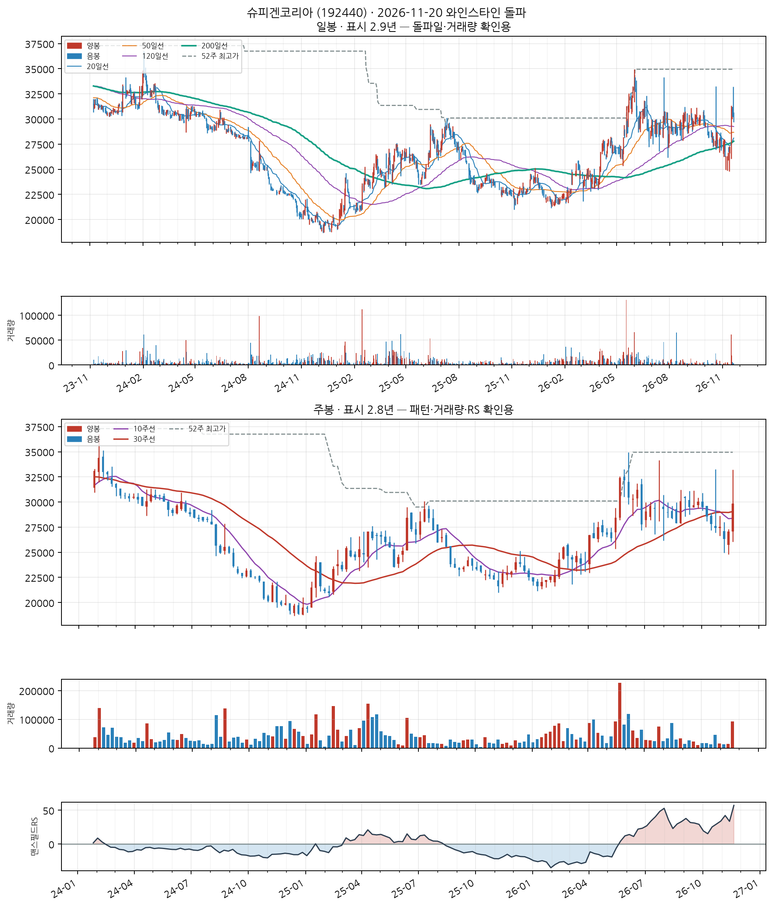
📐 차트 패턴: 약한 유사 — 이중바닥 형태 완성·미돌파 확신 낮음 판정 기준(PDF)
W 형태는 있으나 중간 고점 30,400를 아직 넘지 못했다.
가장 강한 반증 선행 추세: 선행 추세가 상승(+40.9%) — 상승 중 눌림일 수 있어 반전형 전제가 없다
경쟁 후보·더 단순한 설명 더 단순한 설명: 선행 하락이 없어 반전형이 아니라 상승 추세 중 눌림(조정)일 수 있다
측정표 (주봉 종가 기준, 판정일 2026-11-20 이후 데이터 미사용)
조건별 판정
- 미충족 선행 추세 — 선행 추세가 상승(+40.9%) — 상승 중 눌림일 수 있어 반전형 전제가 없다
- 충족 두 저점 일치 — 저점 차이 5.2% ≤ 6% · 두 번째 저점이 첫 저점을 언더컷(IBD 선호)
- 충족 중간 반등 — 중간 반등 15.6% ≥ 8%
- 충족 기간 — 베이스 26주 ≥ 7주
- 충족 깊이 — 베이스 깊이 18.8% ≤ 40%
- 충족 저점2 매도 약화 — 저점2 부근 거래량 = 저점1 부근의 0.34배
- 충족 최근성 — 마지막 구조 피벗(2026-11-06)이 2주 전
- 미충족 넥라인 돌파 — 종가가 아직 확인선 위로 안 올라옴(-1.8%)
- 판정불가 돌파 거래량 — 돌파 전
추가로 필요한 데이터 장중 고저 기준 깊이(여기 수치는 주봉 종가 기준)
패턴만으로 매수 추천이나 목표 달성 확률을 만들지 않습니다. 수치 기준은 잠정치이며 라벨 데이터로 검증되지 않았습니다.
특수 목적용 기계 제조업
업종 참고: RS 평균 40/99(업종 중 상위 74%) · 오늘 신호 2건 · 업종 평균이 코스닥 대비 +10.8%p(126일), 종목별 편차 ±38%p
🧪 자체 섹터 분류(실험적, 참고용): 엑시콘·티에프이 등 14종목 (업종 혼재)
섹터 내 RS 순위: 5/14위 (RS 68/99)
섹터 1~3위: 엑시콘(98), 티에프이(96), 마이크로컨텍솔(86)
※ 자체 상관관계 계산(최근 1년) — 검증 시 기준업종 11개 중 8개 정확. 주 단위로 구성종목이 일부 바뀔 수 있음(주간 일치도 실측 0.53)
종가 14,690 · 거래대금 190억
거래량비 3.0x맨스필드RS +41.3
손절 13,662 | 목표 17,775 | 수량 680주
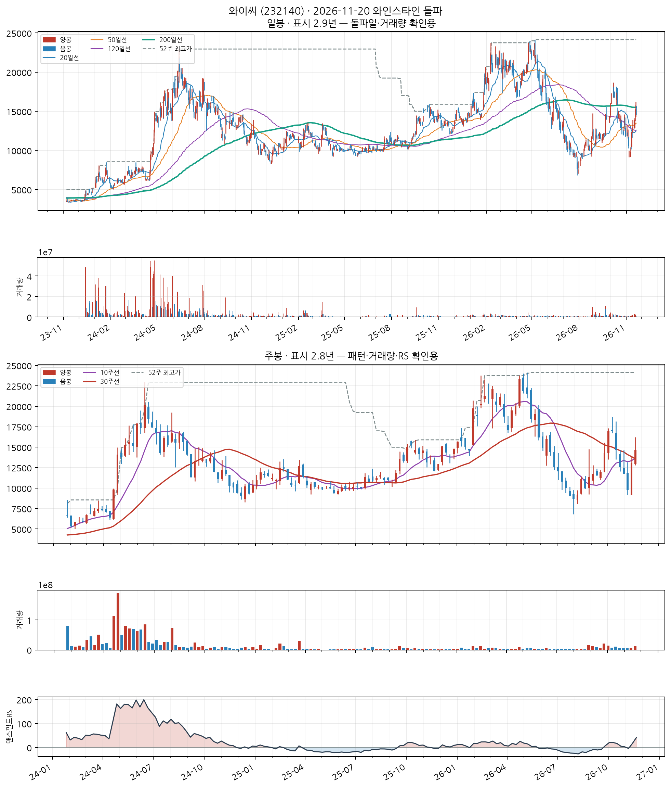
📐 차트 패턴 판정: 후보 없음 후보 없음 판정 기준(PDF)
세 패턴 모두 필수 조건을 채운 후보가 없다(가장 가까운 컵위드핸들 후보: 구조 독립성: 부모 컵(오른쪽 림 2026-10-08)의 핸들 하락(저점 2026-11-06)을 새 컵의 왼쪽 절반으로 재분할한 후보 — 자체 핸들이 아직 없다, 독립된 새 구조의 증거가 없다).
가장 강한 반증 컵위드핸들: 구조 독립성: 부모 컵(오른쪽 림 2026-10-08)의 핸들 하락(저점 2026-11-06)을 새 컵의 왼쪽 절반으로 재분할한 후보 — 자체 핸들이 아직 없다, 독립된 새 구조의 증거가 없다; 역헤드앤숄더: 어깨 대칭: 어깨 높이차 42.8% — 과도(25% 초과); 이중바닥: 두 저점 일치: 저점 차이 11.7% — 같은 지지대로 보기 어려움(10% 초과)
경쟁 후보·더 단순한 설명 더 단순한 설명: 최근 26주 하락 추세 지속(-23.0%) — 베이스 없음
추가로 필요한 데이터 장중 고저 기준 깊이(여기 수치는 주봉 종가 기준)
패턴만으로 매수 추천이나 목표 달성 확률을 만들지 않습니다. 수치 기준은 잠정치이며 라벨 데이터로 검증되지 않았습니다.
코스메카코리아 (241710)
신규
KOSDAQ
기타 화학제품 제조업
업종 참고: RS 평균 57/99(업종 중 상위 51%) · 오늘 신호 4건 · 업종 평균이 코스피 대비 +27.2%p(126일), 종목별 편차 ±40%p
🧪 자체 섹터 분류(실험적, 참고용): 기타 화학제품 제조업 (펌텍코리아·코스맥스 등 6종목)
섹터 내 RS 순위: 3/6위 (RS 97/99)
섹터 1~3위: 펌텍코리아(99), 코스맥스(98), 코스메카코리아(97)
※ 자체 상관관계 계산(최근 1년) — 검증 시 기준업종 11개 중 8개 정확. 주 단위로 구성종목이 일부 바뀔 수 있음(주간 일치도 실측 0.53)
종가 104,100 · 거래대금 50억
거래량비 2.5x맨스필드RS +62.4
손절 96,813 | 목표 125,961 | 수량 96주
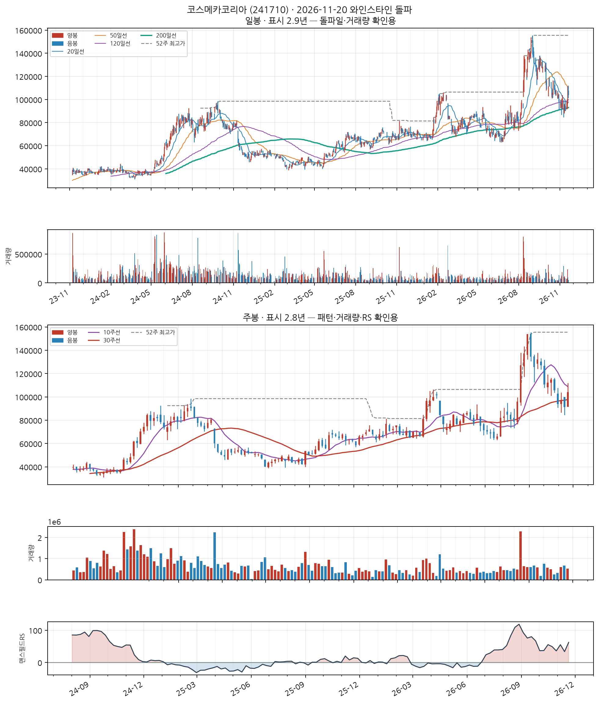
📐 차트 패턴: 약한 유사 — 역헤드앤숄더 형태 완성·미돌파 확신 낮음 판정 기준(PDF)
세 저점 구조는 있으나 넥라인(199,167)을 아직 넘지 못했다.
가장 강한 반증 선행 추세: 선행 추세가 상승(+10.0%) — 상승 중 눌림일 수 있어 반전형 전제가 없다
경쟁 후보·더 단순한 설명 더 단순한 설명: 선행 하락이 없어 반전형이 아니라 상승 추세 중 눌림(조정)일 수 있다
측정표 (주봉 종가 기준, 판정일 2026-11-20 이후 데이터 미사용)
조건별 판정
- 미충족 선행 추세 — 선행 추세가 상승(+10.0%) — 상승 중 눌림일 수 있어 반전형 전제가 없다
- 충족 머리 깊이 — 양 어깨 대비 최소 11.1% ≥ 3.5%
- 부분충족 어깨 대칭 — 어깨 높이차 20.2% — 15% 초과
- 충족 기간 — 어깨 간 35주 ≥ 6주
- 충족 시간 대칭 — 머리 좌우 기간 비 1.50
- 미충족 넥라인 기울기 — 주당 +4.4% — 구조 불안정
- 부분충족 오른쪽 어깨 매도 약화 — 오른쪽 어깨 부근 거래량 = 머리 부근의 1.63배
- 충족 최근성 — 마지막 구조 피벗(2026-11-13)이 1주 전
- 미충족 넥라인 돌파 — 종가가 아직 확인선 위로 안 올라옴(-47.7%)
- 판정불가 돌파 거래량 — 돌파 전
추가로 필요한 데이터 장중 고저 기준 깊이(여기 수치는 주봉 종가 기준)
패턴만으로 매수 추천이나 목표 달성 확률을 만들지 않습니다. 수치 기준은 잠정치이며 라벨 데이터로 검증되지 않았습니다.
스튜디오드래곤 (253450)
신규
KOSDAQ
영화, 비디오물, 방송프로그램 제작 및 배급업
업종 참고: RS 평균 72/99(업종 중 상위 15%) · 오늘 신호 2건 · 업종 평균이 코스닥 대비 +38.3%p(126일), 종목별 편차 ±28%p
🧪 자체 섹터 분류(실험적, 참고용): 오디오물 출판 및 원판 녹음업 (CJ ENM·에스엠 등 8종목)
섹터 내 RS 순위: 3/8위 (RS 93/99)
섹터 1~3위: CJ ENM(95), 에스엠(94), 스튜디오드래곤(93)
※ 자체 상관관계 계산(최근 1년) — 검증 시 기준업종 11개 중 8개 정확. 주 단위로 구성종목이 일부 바뀔 수 있음(주간 일치도 실측 0.53)
종가 30,950 · 거래대금 361억
거래량비 15.9x맨스필드RS +45.6
손절 28,783 | 목표 37,450 | 수량 323주
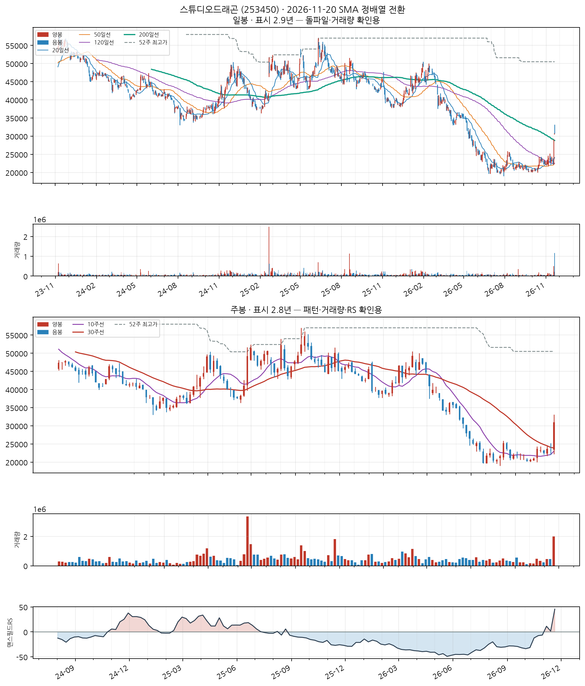
📐 차트 패턴: 약한 유사 — 이중바닥 돌파 확인 확신 낮음 판정 기준(PDF)
두 저점(19,760/20,300) 뒤 중간 고점 25,200를 종가로 넘었다.
가장 강한 반증 선행 추세: 선행 추세가 상승(+10.0%) — 상승 중 눌림일 수 있어 반전형 전제가 없다
경쟁 후보·더 단순한 설명 더 단순한 설명: 선행 하락이 없어 반전형이 아니라 상승 추세 중 눌림(조정)일 수 있다
측정표 (주봉 종가 기준, 판정일 2026-11-20 이후 데이터 미사용)
조건별 판정
- 미충족 선행 추세 — 선행 추세가 상승(+10.0%) — 상승 중 눌림일 수 있어 반전형 전제가 없다
- 충족 두 저점 일치 — 저점 차이 2.7% ≤ 6%
- 충족 중간 반등 — 중간 반등 27.5% ≥ 8%
- 충족 기간 — 베이스 42주 ≥ 7주
- 미충족 깊이 — 베이스 깊이 59.9% — 50% 초과
- 충족 저점2 매도 약화 — 저점2 부근 거래량 = 저점1 부근의 0.50배
- 충족 최근성 — 돌파 주(2026-11-20)가 0주 전
- 충족 넥라인 돌파 — 2026-11-20 주 종가 30,950 > 확인선
- 충족 돌파 거래량 — 돌파 주 거래량 = 직전 10주 평균의 7.04배
추가로 필요한 데이터 장중 고저 기준 깊이(여기 수치는 주봉 종가 기준)
패턴만으로 매수 추천이나 목표 달성 확률을 만들지 않습니다. 수치 기준은 잠정치이며 라벨 데이터로 검증되지 않았습니다.
소프트웨어 개발 및 공급업
업종 참고: RS 평균 55/99(업종 중 상위 54%) · 오늘 신호 4건 · 업종 평균이 코스닥 대비 +27.3%p(126일), 종목별 편차 ±43%p
🧪 자체 섹터 분류(실험적, 참고용): 오디오물 출판 및 원판 녹음업 (CJ ENM·에스엠 등 8종목)
섹터 내 RS 순위: 5/8위 (RS 73/99)
섹터 1~3위: CJ ENM(95), 에스엠(94), 스튜디오드래곤(93)
※ 자체 상관관계 계산(최근 1년) — 검증 시 기준업종 11개 중 8개 정확. 주 단위로 구성종목이 일부 바뀔 수 있음(주간 일치도 실측 0.53)
종가 22,250 · 거래대금 35억
거래량비 4.5x맨스필드RS +19.7
손절 20,692 | 목표 26,922 | 수량 449주
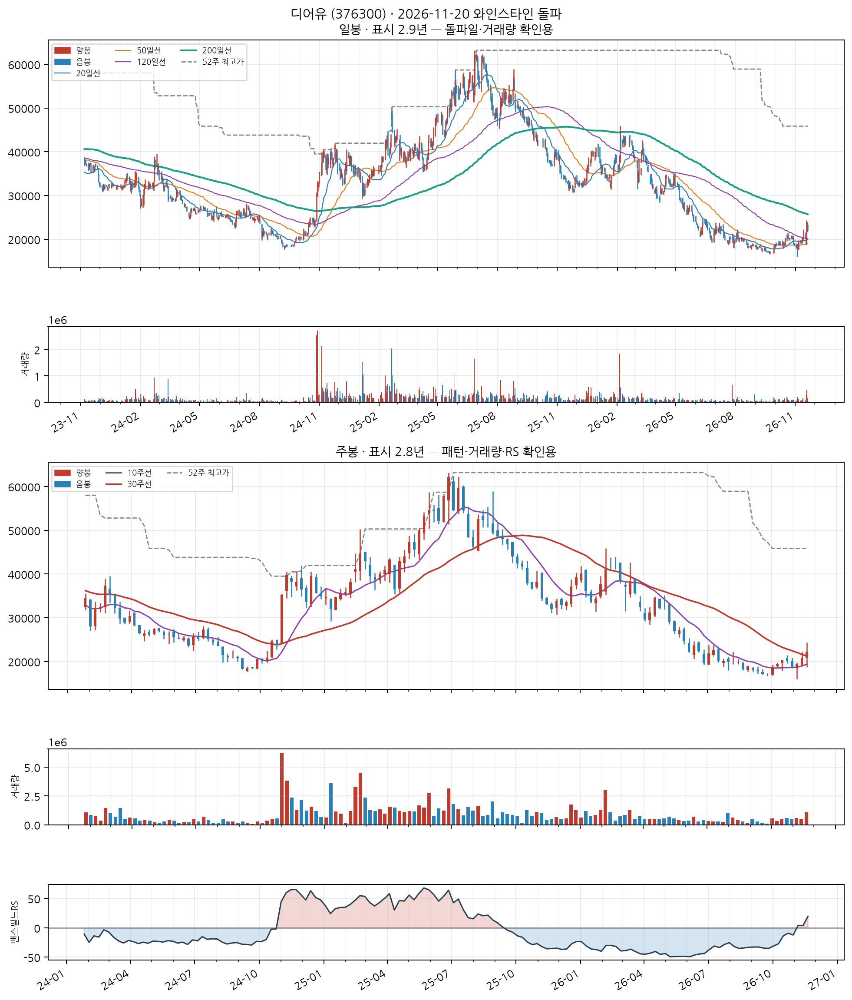
📐 차트 패턴 판정: 후보 없음 후보 없음 판정 기준(PDF)
세 패턴에 해당하는 베이스 구조가 최근 구간에 없다.
가장 강한 반증 피벗 구조 자체가 없다(뚜렷한 저점·고점 교대가 최근 26주 안에 없음).
경쟁 후보·더 단순한 설명 더 단순한 설명: 최근 26주 하락 추세 지속(-18.0%) — 베이스 없음
추가로 필요한 데이터 장중 고저 기준 깊이(여기 수치는 주봉 종가 기준)
패턴만으로 매수 추천이나 목표 달성 확률을 만들지 않습니다. 수치 기준은 잠정치이며 라벨 데이터로 검증되지 않았습니다.
기타 화학제품 제조업
업종 참고: RS 평균 57/99(업종 중 상위 51%) · 오늘 신호 4건 · 업종 평균이 코스피 대비 +27.2%p(126일), 종목별 편차 ±40%p
🧪 자체 섹터 분류(실험적, 참고용): 기타 화학제품 제조업 (마녀공장·클리오 등 8종목)
섹터 내 RS 순위: 1/8위 (RS 91/99)
섹터 1~3위: 마녀공장(91), 클리오(78), 잇츠한불(77)
※ 자체 상관관계 계산(최근 1년) — 검증 시 기준업종 11개 중 8개 정확. 주 단위로 구성종목이 일부 바뀔 수 있음(주간 일치도 실측 0.53)
종가 16,920 · 거래대금 592억
거래량비 36.4x맨스필드RS +62.0
손절 15,736 | 목표 20,473 | 수량 591주
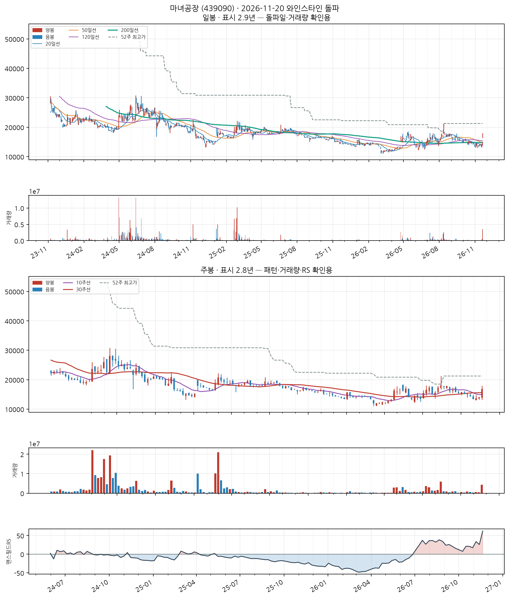
📐 차트 패턴 판정: 후보 없음 후보 없음 판정 기준(PDF)
세 패턴 모두 필수 조건을 채운 후보가 없다(가장 가까운 컵위드핸들 후보: 구조 독립성: 부모 컵(오른쪽 림 2026-08-14)의 핸들 하락(저점 2026-10-08)을 새 컵의 왼쪽 절반으로 재분할한 후보 — 자체 핸들이 아직 없다, 독립된 새 구조의 증거가 없다).
가장 강한 반증 컵위드핸들: 구조 독립성: 부모 컵(오른쪽 림 2026-08-14)의 핸들 하락(저점 2026-10-08)을 새 컵의 왼쪽 절반으로 재분할한 후보 — 자체 핸들이 아직 없다, 독립된 새 구조의 증거가 없다; 이중바닥: 최근성: 돌파가 18주 전(2026-07-16) — 기준 8주 이내, 이미 지난 베이스(확인선 대비 -0.5%); 역헤드앤숄더: 최근성: 돌파가 14주 전(2026-08-14) — 기준 8주 이내, 이미 지난 베이스(확인선 대비 -9.2%)
경쟁 후보·더 단순한 설명 더 단순한 설명: 최근 26주 하락 추세 지속(-0.5%) — 베이스 없음
추가로 필요한 데이터 장중 고저 기준 깊이(여기 수치는 주봉 종가 기준)
패턴만으로 매수 추천이나 목표 달성 확률을 만들지 않습니다. 수치 기준은 잠정치이며 라벨 데이터로 검증되지 않았습니다.